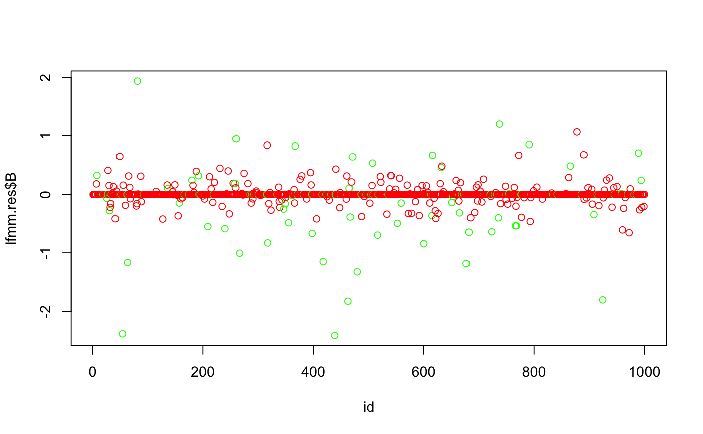

This function computes regularized least squares estimates
for the parameters of latent factor mixed models using a lasso penalty.
The algorithm minimizes the following penalized least-squares criterion
$$ Llasso(U, V, B) =
\frac{1}{2} ||Y - U V^{T} - X B^T||_{F}^2 + \frac{\lambda}{2}
||B||^{2}_{2} , $$
where Y is a response data matrix, X contains all explanatory variables,
U denotes the score matrix, V is the loading matrix, and B is the effect
size matrix.
#> length(cs) < K. Filling cs with zero
## run lfmm
lfmm.res <- lfmm_lasso(Y = dat$Y, X = dat$X, K = 3, nozero.prop= 0.2)
#> It = 1/100, err2 = 3.26652274656267
#> It = 2/100, err2 = 1.27646291315499
#> It = 3/100, err2 = 1.28022825371093
#> It = 4/100, err2 = 1.28109026003838
#> It = 5/100, err2 = 1.28124131736035
#> It = 6/100, err2 = 1.28126806422429
#> It = 7/100, err2 = 1.28127278148912
#> === lambda = 1.44395283064217, no zero B proportion = 0.009
#> It = 1/100, err2 = 1.28127361230844
#> It = 2/100, err2 = 1.28016212868966
#> It = 3/100, err2 = 1.27997515789338
#> It = 4/100, err2 = 1.27994314096977
#> It = 5/100, err2 = 1.27993762670458
#> === lambda = 1.37832294598197, no zero B proportion = 0.01
#> It = 1/100, err2 = 1.27993667378835
#> It = 2/100, err2 = 1.278875476239
#> It = 3/100, err2 = 1.27869845256325
#> It = 4/100, err2 = 1.27866838675492
#> It = 5/100, err2 = 1.27866325372515
#> === lambda = 1.31567604086868, no zero B proportion = 0.01
#> It = 1/100, err2 = 1.27866237504461
#> It = 2/100, err2 = 1.2777000895569
#> It = 3/100, err2 = 1.27753995440572
#> It = 4/100, err2 = 1.27751267224293
#> It = 5/100, err2 = 1.2775079786755
#> === lambda = 1.25587653427815, no zero B proportion = 0.012
#> It = 1/100, err2 = 1.27750716565263
#> It = 2/100, err2 = 1.27654070108557
#> It = 3/100, err2 = 1.2763778719703
#> It = 4/100, err2 = 1.27634974473096
#> It = 5/100, err2 = 1.27634483556002
#> === lambda = 1.19879500755302, no zero B proportion = 0.013
#> It = 1/100, err2 = 1.2763439728617
#> It = 2/100, err2 = 1.27529017850621
#> It = 3/100, err2 = 1.2751113320099
#> It = 4/100, err2 = 1.27508027173484
#> It = 5/100, err2 = 1.27507482572562
#> === lambda = 1.14430792431365, no zero B proportion = 0.016
#> It = 1/100, err2 = 1.27507386481894
#> It = 2/100, err2 = 1.27399185578571
#> It = 3/100, err2 = 1.27381055666758
#> It = 4/100, err2 = 1.27377931103754
#> It = 5/100, err2 = 1.27377384881379
#> === lambda = 1.0922973630995, no zero B proportion = 0.018
#> It = 1/100, err2 = 1.27377288376155
#> It = 2/100, err2 = 1.27273204013767
#> It = 3/100, err2 = 1.27256070377619
#> It = 4/100, err2 = 1.2725317107981
#> It = 5/100, err2 = 1.27252673797543
#> === lambda = 1.04265076216242, no zero B proportion = 0.019
#> It = 1/100, err2 = 1.27252587653544
#> It = 2/100, err2 = 1.27143914905618
#> It = 3/100, err2 = 1.27125531816485
#> It = 4/100, err2 = 1.27122322494243
#> It = 5/100, err2 = 1.2712175239834
#> === lambda = 0.99526067585942, no zero B proportion = 0.025
#> It = 1/100, err2 = 1.27121649794024
#> It = 2/100, err2 = 1.27005531706704
#> It = 3/100, err2 = 1.26985905276569
#> It = 4/100, err2 = 1.26982453799485
#> It = 5/100, err2 = 1.26981828903652
#> === lambda = 0.950024542117824, no zero B proportion = 0.03
#> It = 1/100, err2 = 1.26981713046973
#> It = 2/100, err2 = 1.26865290690907
#> It = 3/100, err2 = 1.26845102738689
#> It = 4/100, err2 = 1.26841444852498
#> It = 5/100, err2 = 1.26840762668066
#> It = 6/100, err2 = 1.26840632591737
#> === lambda = 0.906844460469434, no zero B proportion = 0.036
#> It = 1/100, err2 = 1.26840607351692
#> It = 2/100, err2 = 1.26708914574577
#> It = 3/100, err2 = 1.26687039066692
#> It = 4/100, err2 = 1.26683240992427
#> It = 5/100, err2 = 1.26682560138985
#> === lambda = 0.865626980173432, no zero B proportion = 0.038
#> It = 1/100, err2 = 1.26682434850154
#> It = 2/100, err2 = 1.26559604703044
#> It = 3/100, err2 = 1.26539746955957
#> It = 4/100, err2 = 1.26536382579392
#> It = 5/100, err2 = 1.26535792391956
#> === lambda = 0.826282897969393, no zero B proportion = 0.041
#> It = 1/100, err2 = 1.2653568576894
#> It = 2/100, err2 = 1.26420465814934
#> It = 3/100, err2 = 1.26402257844314
#> It = 4/100, err2 = 1.26399224744773
#> It = 5/100, err2 = 1.26398698150694
#> === lambda = 0.788727065022752, no zero B proportion = 0.045
#> It = 1/100, err2 = 1.26398603358954
#> It = 2/100, err2 = 1.26288250660255
#> It = 3/100, err2 = 1.26270876874045
#> It = 4/100, err2 = 1.26267923808838
#> It = 5/100, err2 = 1.26267385486012
#> === lambda = 0.752878202644886, no zero B proportion = 0.06
#> It = 1/100, err2 = 1.26267281278876
#> It = 2/100, err2 = 1.26159076189532
#> It = 3/100, err2 = 1.26142511268257
#> It = 4/100, err2 = 1.26139784811188
#> It = 5/100, err2 = 1.26139300133613
#> === lambda = 0.718658726389011, no zero B proportion = 0.07
#> It = 1/100, err2 = 1.26139207147549
#> It = 2/100, err2 = 1.26036167477797
#> It = 3/100, err2 = 1.260212622267
#> It = 4/100, err2 = 1.26018932932178
#> It = 5/100, err2 = 1.26018533211054
#> === lambda = 0.68599457814119, no zero B proportion = 0.084
#> It = 1/100, err2 = 1.26018457075782
#> It = 2/100, err2 = 1.25925943740556
#> It = 3/100, err2 = 1.25913977304653
#> It = 4/100, err2 = 1.25912430725053
#> It = 5/100, err2 = 1.25912233520647
#> === lambda = 0.654815065843059, no zero B proportion = 0.093
#> It = 1/100, err2 = 1.25912209487184
#> It = 2/100, err2 = 1.25829075974625
#> It = 3/100, err2 = 1.25819864022736
#> It = 4/100, err2 = 1.25819015977371
#> === lambda = 0.625052710499409, no zero B proportion = 0.111
#> It = 1/100, err2 = 1.25818996815317
#> It = 2/100, err2 = 1.25739846087225
#> It = 3/100, err2 = 1.25732536433296
#> It = 4/100, err2 = 1.25732315121791
#> It = 5/100, err2 = 1.25732493569216
#> === lambda = 0.596643100139507, no zero B proportion = 0.133
#> It = 1/100, err2 = 1.25732578840238
#> It = 2/100, err2 = 1.25660242510642
#> It = 3/100, err2 = 1.256554211793
#> It = 4/100, err2 = 1.25656117617627
#> It = 5/100, err2 = 1.2565661720019
#> It = 6/100, err2 = 1.25656812253392
#> === lambda = 0.569524750416099, no zero B proportion = 0.155
#> It = 1/100, err2 = 1.2565687946991
#> It = 2/100, err2 = 1.25593182631883
#> It = 3/100, err2 = 1.25591401615866
#> It = 4/100, err2 = 1.25593071378099
#> It = 5/100, err2 = 1.25593894131518
#> It = 6/100, err2 = 1.25594203992831
#> === lambda = 0.543638971540403, no zero B proportion = 0.179
#> It = 1/100, err2 = 1.255943127222
#> It = 2/100, err2 = 1.25536544664416
#> It = 3/100, err2 = 1.25537331988958
#> It = 4/100, err2 = 1.25540011246254
#> It = 5/100, err2 = 1.2554120333226
#> It = 6/100, err2 = 1.25541649357693
#> It = 7/100, err2 = 1.25541809113613
#> === lambda = 0.518929741265118, no zero B proportion = 0.2
#> It = 1/100, err2 = 1.25541865522693
#> It = 2/100, err2 = 1.25487946777324
#> It = 3/100, err2 = 1.25490301594095
#> It = 4/100, err2 = 1.25493464119494
#> It = 5/100, err2 = 1.25494864653932
#> It = 6/100, err2 = 1.2549540810959
#> It = 7/100, err2 = 1.25495612681594
#> === lambda = 0.495343583640544, no zero B proportion = 0.234
## plot size effect matrix
id <- seq_along(lfmm.res$B)
cols <- c('red', 'green')[as.numeric(id %in% dat$outlier) + 1]
plot(id, lfmm.res$B, col = cols)
